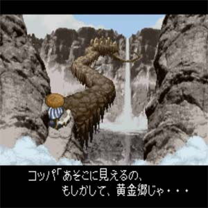

不思議のダンジョン２ 風来のシレン
1995年12月1日発売
開発・発売：チュンソフト（現スパイク・チュンソフト）

このゲームも「トルネコの大冒険」と同じく、「不思議のダンジョン」のゲームです。トルネコの世界観とは異なり、和風なテイストのゲームです。
システムと難易度はトルネコよりもパワーアップしていて、やりごたえがあります。
いろいろとできることが増えたので、戦略が広がってさらに頭を使うゲームになりました。
ダンジョンも、メインのダンジョンの他に、モンスターに変身できるアイテムを駆使して進むダンジョン、ワナを使って進むダンジョン、とても難易度の高いダンジョンなど種類が豊富です。
このゲームも、一度ハマるとずっとやっていたくなります。おすすめです。
今でもタイムアタック大会が行われていて、根強い人気のゲームです。ニコニコなどでも生放送でタイムアタックをしていたりします。
僕には全くできませんが、かなり腕の立つプレイヤーだとあっという間に1発でクリアしたりすることもできるようです。